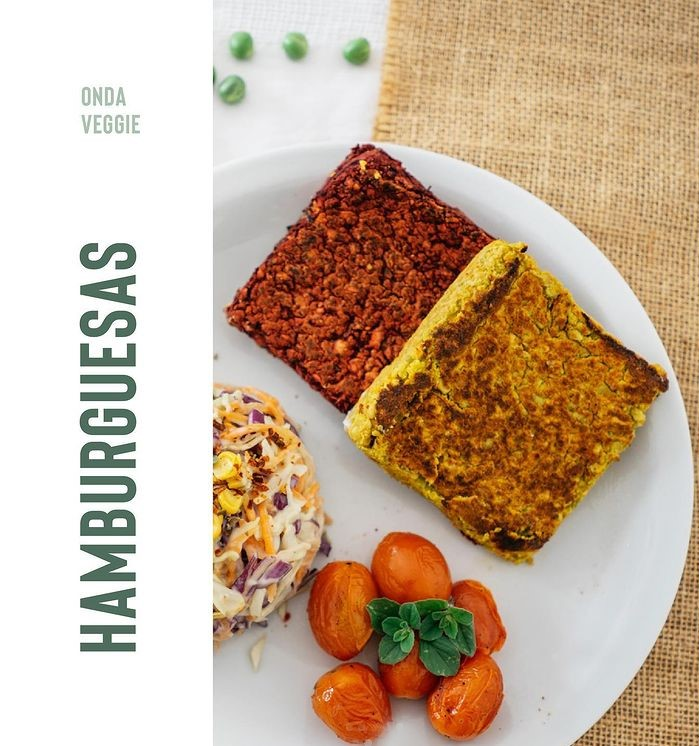
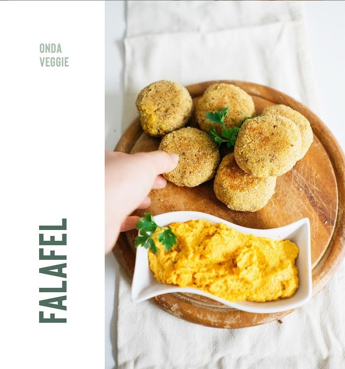
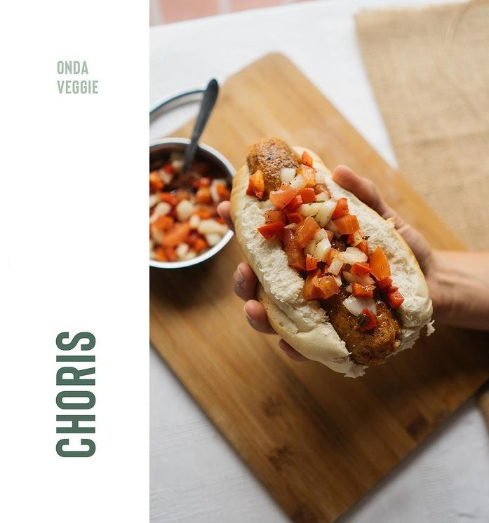
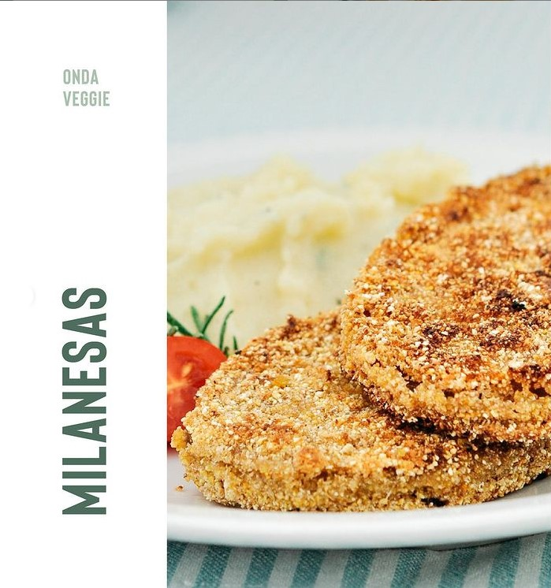

MENÚ PRINCIPAL

Sabores:
- Garbanzos, calabaza y cebolla de verdeo
- Porotos negros y berenjenas
- Lentejas
- Porotos mung y brócoli
- Arvejas y zanahoria

Estas croquetas de garbanzos sin conservantes típicas de la cocina oriental.

100% veganos - de arroz y soja texturizada. ¡El próximo asado, lucite con unos ricos choris a la parrilla!

Nuestras milas de berenjena, además de veganas, están rebozadas con productos Sin Tacc. También las podés encontrar en uno de nuestros combos, que es un mix de milas, falafel y burgers!